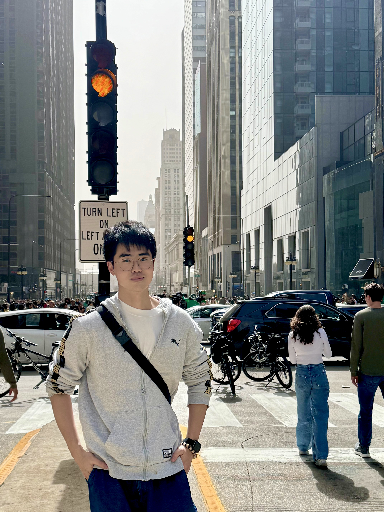

王诗尧
I am a PhD student in Management at the Hong Kong University of Science and Technology (HKUST) and a recipient of the Hong Kong PhD Fellowship Scheme (HKPFS). I graduated with honors from the University of Chicago's MSCAPP (jointly offered by the Harris and the CS Department) and hold dual Bachelor's degrees in Economics and Mathematics from Renmin University of China.
My research interests center on Social Cognition and Cultural Evolution. My recent work examines the historical antecedents of stereotypes, the organizational conditions that sustain or transform stereotypes, and the role of cultural values in organizations, especially in the age of AI. To investigate these questions, I combine Computational Methods applied to large-scale archival and textual data with Human Experiments.
Together, these projects advance my broader goal: understanding how culture, shocks, and society shape our minds, and how we can lessen the inequality through interventions.
I am fortunate to be advised by Prof. Ying Lin (HKUST, Management). I was previously advised by Prof. Xuechunzi Bai (University of Chicago, Psychology) and have also worked with Prof. Junjian Yi (Peking University, National School of Development).
Historical Stereotype Change is Tied to the Entry and Exit of Distributed Group Concepts
With Joshua Jackson and Xuechunzi Bai
In submission for Psychological Science
Presented at SPSP 2026 Main Conference, Computational Psychology Preconference
Female Leadership and Gender Stereotypes in Job Postings
With Hanyu Zhu and Junjian Yi
Manuscript in preparation; in submission for Management Science
Early Earthquakes and Long Term Cognitive Consequences
Under 2nd review at Economic Analysis and Policy
JCR Q1 · Impact Factor: 9.0 (2025)
June 2026
Graduated with honors from the University of Chicago's MSCAPP program.
April 2026
Thrilled to have been awarded the Hong Kong PhD Fellowship Scheme (HKPFS), and to be joining HKUST Business School.
February 2026
Presented Historical Stereotype Change is Tied to the Entry and Exit of Distributed Group Concepts (preprint) (poster) at the SPSP Annual Convention (Computational Psychology Preconference)